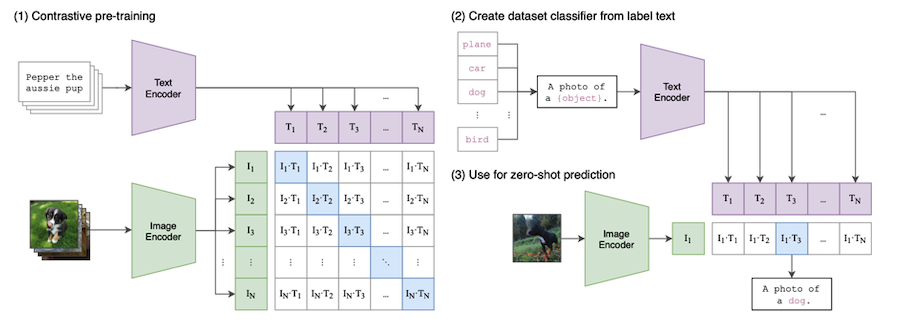
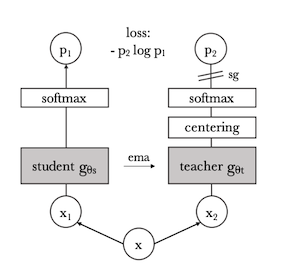

Chapter 4 Chapter 4: Image Encoders
Image encoders have evolved significantly with the emergence of self-supervised learning techniques. Building on the Transformer architecture discussed in the previous chapter, we now explore how these mechanisms are applied to vision. Recent advancements like DINO and DINOv2 have demonstrated strong performance in learning feature representations without labeled data.
4.1 Vision Transformers (ViTs)
ViTs apply self-attention to image data, treating images as sequences of patches rather than using convolutional operations.

4.1.1 Patch Extraction and Encoding
An image is split into patches, flattened, and passed through a linear projection:
\[X_{patch} = W_E \cdot X_{input} + b_E\]
where \(W_E\) is the embedding matrix and \(b_E\) is a bias term. These embeddings are then processed using self-attention layers to extract contextual information.
4.1.2 Applications of Vision Transformers (ViTs)
| Application | Description | Example.Use.Cases |
|---|---|---|
| Image Classification | Categorizing images into different classes | ViTs trained on ImageNet outperform ResNets |
| Object Detection & Segmentation | Identifying and segmenting objects in images | DETR (Facebook AI) for autonomous driving and surveillance |
| Medical Image Analysis | Detecting diseases from medical scans | Cancer detection in pathology slides using ViTs |
| Video Understanding & Action Recognition | Recognizing actions in video frames | TimeSformer for video classification |
| Remote Sensing & Satellite Image Processing | Land classification, disaster analysis | Urban planning, flood detection |
| Image Generation & Super-Resolution | Enhancing image quality and generating realistic images | DALL-E and Stable Diffusion for AI-generated art |
| Robotics & Autonomous Navigation | Scene understanding for self-driving cars & robots | ViTs used in autonomous robot perception modules |
| Face Recognition & Biometrics | Identity verification and surveillance | ViT-based facial recognition in low-light conditions |
| Optical Character Recognition (OCR) | Extracting text from images and documents | Google’s OCR for document scanning and language translation |
| Fashion & Retail | Virtual try-ons, fashion recommendations | Automated product tagging in e-commerce |
4.2 Contrastive Language-Image Pretraining (CLIP)
CLIP is a multimodal self-supervised learning model designed to learn joint representations of images and text. It is trained on a large dataset of image-text pairs using a contrastive learning approach.
4.2.1 Architecture
CLIP consists of two main components:
- An image encoder (ResNet or Vision Transformer)
- A text encoder (Transformer-based model)
Both encoders project images and text into a shared embedding space, where semantically similar images and text have higher similarity scores.

4.2.2 Training Objective
CLIP uses a contrastive learning objective where it maximizes the cosine similarity between matching image-text pairs while minimizing similarity between mismatched pairs:
\[\mathcal{L}_{CLIP} = - \sum_{i} \log \frac{e^{\cos(I_i, T_i)/\tau}}{\sum_j e^{\cos(I_i, T_j)/\tau}}\]
where \(I_i\) and \(T_i\) are corresponding image-text pairs, and \(\tau\) is a temperature parameter that controls the sharpness of the distribution.
4.3 DINO: Self-Supervised Vision Encoding
DINO (Self-Distillation without Labels) is a self-supervised learning method that trains a student network to predict the output of a momentum teacher network.

4.3.1 Key Features of DINO
- Works with both CNNs and ViTs
- Learns representations using contrastive learning
- Uses a momentum teacher-student setup
- Multi-crop augmentation for efficient feature learning
- Achieves competitive performance in unsupervised representation learning
4.3.2 DINO Training Process
The DINO training process uses a self-supervised learning (SSL) approach that can be interpreted as a form of knowledge distillation without labels. It involves a student network and a teacher network that have the same architecture but different parameters.
4.3.2.1 Training Steps
Input and Augmentation: An input image is passed through two different random transformations, creating two distorted views. These views are fed into the student and teacher networks.
Student and Teacher Networks: The student network (\(g_{\theta_s}\)) and the teacher network (\(g_{\theta_t}\)) process the augmented images, outputting feature maps. The teacher network’s output is centered by subtracting the mean over the batch.
Loss Calculation: DINO minimizes the cross-entropy loss between teacher and student outputs:
\[\mathcal{L}_{DINO} = - \sum_{i} p_i^T \log p_i^S\]
where \(p_i^T\) and \(p_i^S\) are teacher and student predictions.
- Teacher Update: The teacher network’s parameters are updated using an exponential moving average (EMA) of the student network’s parameters:
\[\theta_t \leftarrow m \cdot \theta_t + (1 - m) \cdot \theta_s\]
Centering and Sharpening: The teacher network’s output is centered with a mean computed over the batch, and output sharpening is achieved by using a low temperature value in the teacher’s softmax normalization.
Multi-Crop Training: The student is fed multiple crops of an image, and it must align its local feature representations with those predicted by the teacher network for the global views of the image.
4.4 DINOv2: Improved Vision Encoding
DINOv2 extends DINO with Masked Image Modeling (MIM) and Self-Supervised Instance Discrimination, improving its ability to capture both local and global features.
4.4.1 Key Improvements in DINOv2
- Introduces masked image modeling (MIM) to learn local textures
- Uses multi-crop augmentation to enhance representation learning
- No reliance on text supervision (unlike CLIP)
- Improved transferability to dense prediction tasks (e.g., segmentation)
- Asymmetric teacher-student design for more effective training
- Incorporates KoLeo regularization to improve feature uniformity
4.4.2 Masked Image Modeling (MIM)
MIM extends the concept of MLM to images by randomly masking patches in an image and training the model to reconstruct the missing information. The objective function for MIM is:
\[\mathcal{L}_{MIM} = - \sum_{i \in M} \log P(I_i | I_{\backslash i})\]
where \(I_i\) represents the masked image patch, and \(I_{\backslash i}\) denotes the observed patches.
4.4.3 Training Objectives
DINOv2 uses a hybrid objective:
\[\mathcal{L}_{DINOv2} = \lambda_1 \mathcal{L}_{MIM} + \lambda_2 \mathcal{L}_{Instance}\]
where:
- \(\mathcal{L}_{MIM}\) is the loss for masked image modeling, focusing on reconstructing masked patches
- \(\mathcal{L}_{Instance}\) is the loss for instance discrimination, ensuring robust feature alignment across augmentations
DINOv2 leverages a vision-only training approach, making it highly effective for self-supervised learning in image-based tasks.
4.5 Applications of DINO and DINOv2
DINO and DINOv2 represent significant advances in self-supervised learning for vision tasks. Their ability to learn rich representations without labeled data makes them valuable for diverse applications:
4.5.1 Core Applications
| Application | Description | Key Results |
|---|---|---|
| Image Classification | Categorizing images without labels | 80.1% top-1 accuracy on ImageNet with ViT-Base |
| Feature Extraction | Learning robust visual features | 78.3% top-1 with k-NN classifier (ViT-S/8) |
| Object Discovery | Semantic segmentation from features | Separates objects without supervision |
| Image Retrieval | Finding similar images | Outperforms supervised methods on GLDv2 |
| Copy Detection | Identifying distorted copies | Highly competitive performance |
| Transfer Learning | Adapting to downstream tasks | 1-2% improvement over supervised pre-training |
4.5.2 Medical Imaging with RAD-DINO
RAD-DINO, a model pre-trained using the DINOv2 framework, demonstrates that high-quality biomedical image encoders can be trained using only unimodal imaging data, without relying on text supervision.
- Image Classification: Achieves similar or superior performance compared to language-supervised models
- Semantic Segmentation: Performs well without large, densely annotated training datasets
- Report Generation: Excels at generating accurate text reports from images
- Demographic Prediction: More accurately predicts patient demographic information (e.g., sex, age)